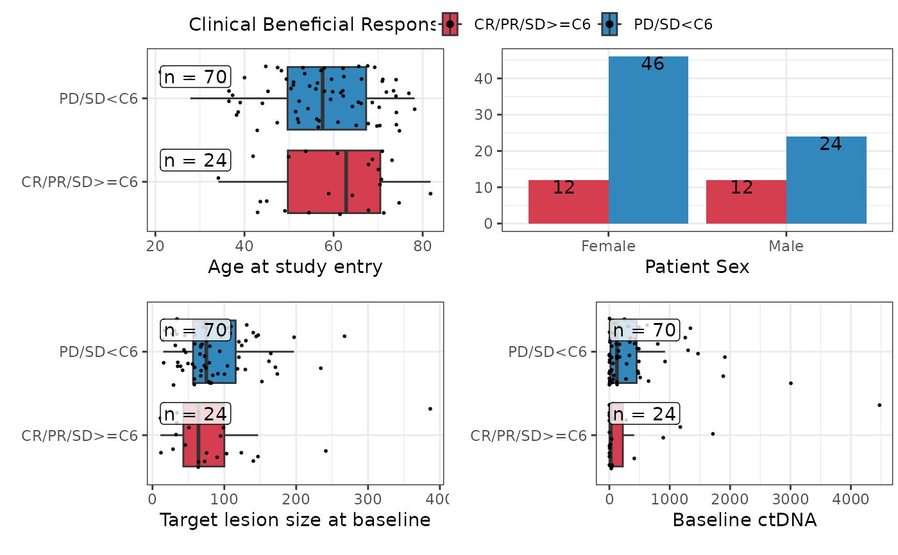

plotuv.RdThis function is designed to accompany rm_uvsum as a means of
visualising the results, and uses similar syntax.
character vector with names of columns to use for response
character vector with names of columns to use for covariates
dataframe containing your data
boolean indicating whether sample sizes should be shown on the plots
boolean indicating whether individual data points should be shown when n>20 in a category
boolean indicating whether na values should be shown or removed
character value with title of the plot
boolean indicating that the list of plots should be returned instead of a plot, useful for applying changes to the plot, see details
the number of columns of plots to be display in the ggarrange call, defaults to 2
sets the TRBL margins of the individual plots, defaults to c(0,0.2,1,.2)
Default is 20, if there are fewer than 20 observations in a category then dotplots, as opposed to boxplots are shown.
should a mix of dotplots and boxplots be shown based on sample size? If false then all categories will be shown as either dotplots, or boxplots according the bpThreshold and the smallest category size
Show violin plots instead of boxplots. This will override bpThreshold and mixed.
for categorical variables how should barplots be presented. Default is "dodge" IF stack is TRUE then n will not be shown.
boolean, default is true if the variables have label attributes this will be shown in the plot instead of the variable names, or if there are no labels then tidy versions of the variable names will be used. If use_labels=FALSE the variable names will be used.
a list containing plots for each variable in covs
Plots are displayed as follows: If response is continuous For a numeric predictor scatterplot For a categorical predictor: If 20+ observations available boxplot, otherwise dotplot with median line If response is a factor For a numeric predictor: If 20+ observations available boxplot, otherwise dotplot with median line For a categorical predictor barplot Response variables are shown on the ordinate (y-axis) and covariates on the abscissa (x-axis)
Variable names are replaced by their labels if available, or by tidy versions if not. Set use_labels=FALSE to use the variable names.
## Run multiple univariate analyses on the pembrolizumab dataset to predict cbr and
## then visualise the relationships.
data("pembrolizumab")
rm_uvsum(data=pembrolizumab,
response='cbr',covs=c('age','sex','l_size','baseline_ctdna'))
#> <table class="table table" style="margin-left: auto; margin-right: auto; margin-left: auto; margin-right: auto;">
#> <thead>
#> <tr>
#> <th style="text-align:left;position: sticky; top:0; background-color: #FFFFFF;"> </th>
#> <th style="text-align:right;position: sticky; top:0; background-color: #FFFFFF;"> OR(95%CI) </th>
#> <th style="text-align:right;position: sticky; top:0; background-color: #FFFFFF;"> p-value </th>
#> <th style="text-align:right;position: sticky; top:0; background-color: #FFFFFF;"> N </th>
#> <th style="text-align:right;position: sticky; top:0; background-color: #FFFFFF;"> Event </th>
#> </tr>
#> </thead>
#> <tbody>
#> <tr>
#> <td style="text-align:left;"> <span style="font-weight: bold;">Age at study entry</span> </td>
#> <td style="text-align:right;"> 0.98 (0.94, 1.02) </td>
#> <td style="text-align:right;"> 0.27 </td>
#> <td style="text-align:right;"> 94 </td>
#> <td style="text-align:right;"> 70 </td>
#> </tr>
#> <tr>
#> <td style="text-align:left;"> <span style="font-weight: bold;">Patient Sex</span> </td>
#> <td style="text-align:right;"> </td>
#> <td style="text-align:right;"> </td>
#> <td style="text-align:right;"> 94 </td>
#> <td style="text-align:right;"> 70 </td>
#> </tr>
#> <tr>
#> <td style="text-align:left;padding-left: 2em;" indentlevel="1"> Female </td>
#> <td style="text-align:right;"> Reference </td>
#> <td style="text-align:right;"> </td>
#> <td style="text-align:right;"> 58 </td>
#> <td style="text-align:right;"> 46 </td>
#> </tr>
#> <tr>
#> <td style="text-align:left;padding-left: 2em;" indentlevel="1"> Male </td>
#> <td style="text-align:right;"> 0.52 (0.20, 1.34) </td>
#> <td style="text-align:right;"> 0.17 </td>
#> <td style="text-align:right;"> 36 </td>
#> <td style="text-align:right;"> 24 </td>
#> </tr>
#> <tr>
#> <td style="text-align:left;"> <span style="font-weight: bold;">Target lesion size at baseline</span> </td>
#> <td style="text-align:right;"> 1.00 (0.99, 1.01) </td>
#> <td style="text-align:right;"> 0.96 </td>
#> <td style="text-align:right;"> 94 </td>
#> <td style="text-align:right;"> 70 </td>
#> </tr>
#> <tr>
#> <td style="text-align:left;"> <span style="font-weight: bold;">Baseline ctDNA</span> </td>
#> <td style="text-align:right;"> 1.00 (1.00, 1.00) </td>
#> <td style="text-align:right;"> 0.78 </td>
#> <td style="text-align:right;"> 94 </td>
#> <td style="text-align:right;"> 70 </td>
#> </tr>
#> </tbody>
#> </table>
plotuv(data=pembrolizumab, response='cbr',
covs=c('age','sex','l_size','baseline_ctdna'),showN=TRUE)
#> Warning: Ignoring unknown parameters: `label.size`
#> Warning: Ignoring unknown parameters: `label.size`
#> Warning: Ignoring unknown parameters: `label.size`
#> Warning: `stat(count)` was deprecated in ggplot2 3.4.0.
#> ℹ Please use `after_stat(count)` instead.
#> ℹ The deprecated feature was likely used in the reportRmd package.
#> Please report the issue to the authors.
